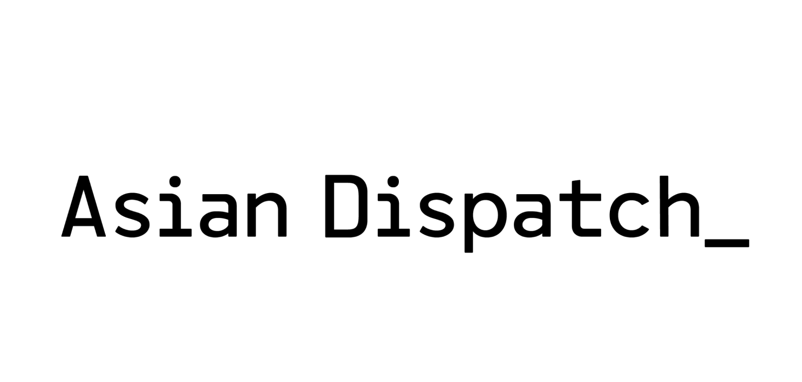
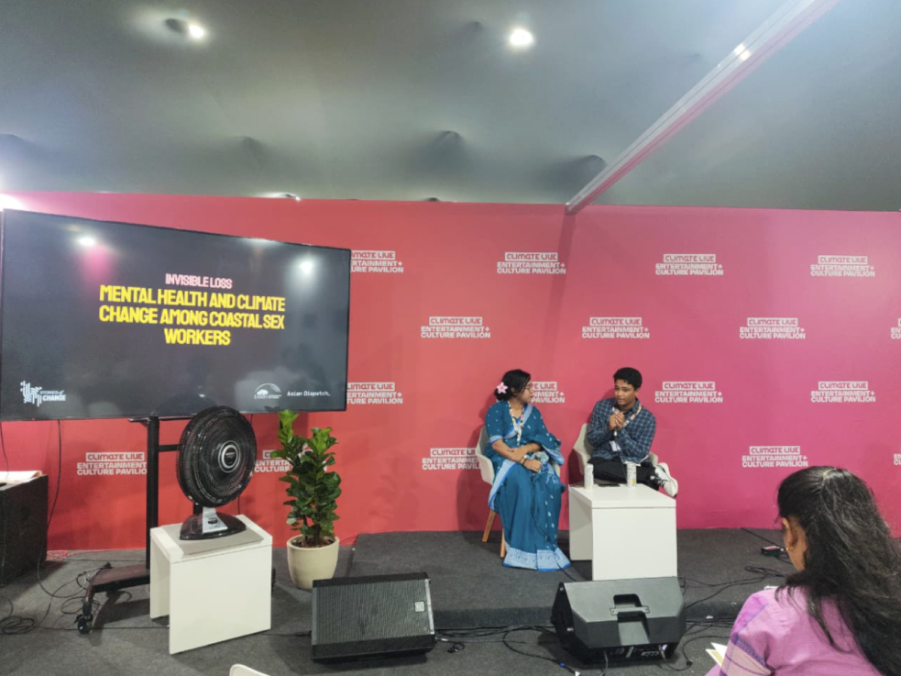

RIFAT ANIK
Telling stories of the people overlooked, the planet under stress, and the progress possible.
Curious about how people are shaping the planet, and how the planet is reacting to affect all living things and systems back. Being trained in environmental sciences at Gettysburg college, while gathering multidisciplinary skills to tell these stories, which started back in high school in Dhaka.
Researching and documenting over the summer in Tanzania
Tanzania, 2026
Documenting Maasai Displacement causing cultural erosion
Young Maasai men who migrated to Dar es Salaam are adapting to city life as security guards, threatening their indigenous knowledge.
Researching ethanol cooking transitions in Dar es Salaam
Households are adopting ethanol stoves but not the fuel, and that gap is where the transition is failing.
↗
Filming a Zanzibar fishing community celebrate the science they enabled, and the gratitude owed to them.
Zanzibar, 2026
Sea cucumber fishers in Uzi spent months helping National Geographic Explorer Taylor Bratton understand their practices; she came back to say thank you.
View
↗
The women of a disappearing island, losing their land, their livelihoods, and their mental health to the sea.
Bangladesh, Brazil, 2025
As part of the Earth Journalism Network's non-economic loss and damage reporting fellowship, I worked alongside independent journalist, Usraat Fahmidah to document the mental health and livelihood struggles of a coastal sex worker community in Banishanta, whose island is slowly being reclaimed by the Bay of Bengal. The multimedia report was published on Asian Dispatch, and the documentary on their YouTube channel.

Screened the film at COP30 in Belém alongside loss and damage policymakers as negotiations reached a critical stage.
In collaboration with the Entertainment and Culture Pavilion, the screening opened a dialogue between the story of one disappearing community and the policy language being written about millions like them.
↗

Designing and delivering products at scale, across formats
Full Telecom Product Suite: Rivertel
New York, 2024
Designing the full product suite for a telecom company making communication affordable for migrant communities in New York.
↗
Report Design: World Bank Group
Bangladesh, 2022
Communicating complex research through design for the Bangladesh Country Climate and Development Report.
↗
Climate Atlas Bangladesh
Bangladesh, 2023
Building a beta tool to visualise Bangladesh's climatic stressors and the stories being reported from them.
↗
Get in Touch
rifatabraranik@gmail.com
CC BY-NC-ND 4.0
© 2026 by Rifat Anik
This website does not collect, store, or share any personal information or visitor data.